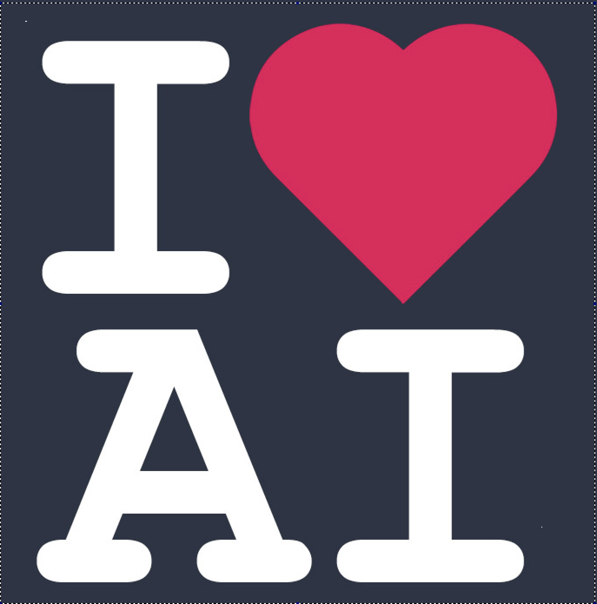

Haji mastan Vali
Check the Linkdin for how to use Docusaurus.

Summary
Three years of experience in python programming
Decent experience in working with Machine Learning Algorithms like KNN, Logistic & Linear Regressions, SVM, PCA, t-SNE, K-means, RandomForest, XGBoost and Time Series Analysis
Hands-on experience in working with Deep Learning models using Keras and Tensorflow with a very good understanding of CNN and RNN
Exposure on working with Natural Language Processing tasks with a very good understanding of Transformer-based BERT and XLNet architectures.
Good understanding of Deep Learning architectures like VGGNet, ResNet and GoogLeNet (InceptionNet)
Good knowledge of state-of-art Computer Vision models like SSD, Faster RCNN and Mask R-CNN
Mauris In Code
```
Mauris vestibulum ullamcorper nibh, ut semper purus pulvinar ut. Donec volutpat orci sit amet mauris malesuada, non pulvinar augue aliquam. Vestibulum ultricies at urna ut suscipit. Morbi iaculis, erat at imperdiet semper, ipsum nulla sodales erat, eget tincidunt justo dui quis justo. Pellentesque dictum bibendum diam at aliquet. Sed pulvinar, dolor quis finibus ornare, eros odio facilisis erat, eu rhoncus nunc dui sed ex. Nunc gravida dui massa, sed ornare arcu tincidunt sit amet. Maecenas efficitur sapien neque, a laoreet libero feugiat ut.
```
TECHNICAL EXPERTISE:
| skils | tools |
|---|---|
| Data Science | Python,Pandas,Numpy,scikit-learn |
| Technologies | Android , ASP.NET, ASP.NET MVC |
| IDE | Visual Studio 2013, 2015 and Eclipse for Android |
| Database | Microsoft SQL (Transact-SQL) |